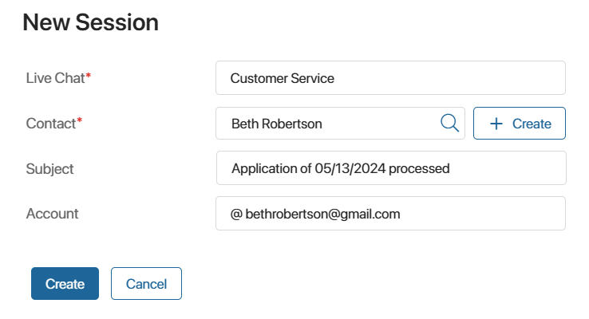
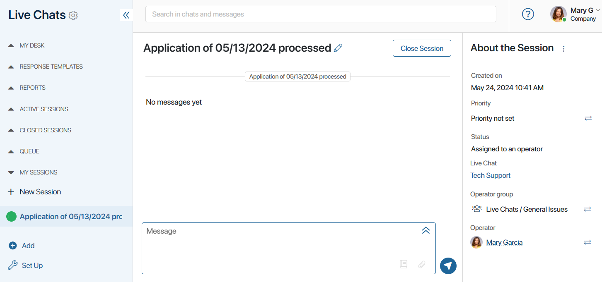
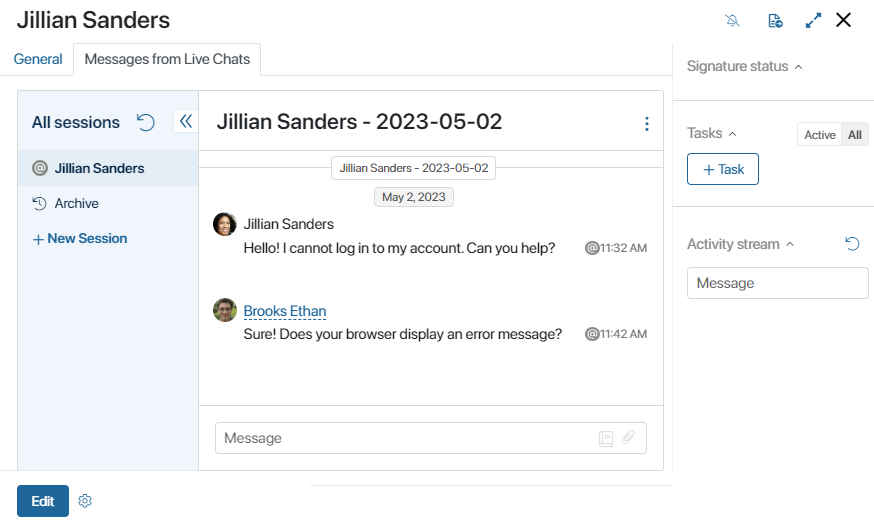

Если к линии подключены мессенджеры или электронная почта, операторы могут самостоятельно создавать сессии с клиентами и партнёрами в разделе Линии или с карточек элементов приложений, связанных с сессиями.
Например, если номер телефона клиента известен, оператор может начать общение с ним в линии, подключённой к WhatsApp. Это также удобно, когда необходимо возобновить закрытую сессию с уже обращавшимся клиентом.
Обратите внимание, при активированном решении ELMA365 Service операторы со статусом Офлайн не могут создавать новые сессии.
Создать сессию из раздела «Линии»
Чтобы создать сессию, выполните следующие действия:
- Перейдите в раздел Линии. В блоке Мои сессии нажмите кнопку + Новая сессия.
- В открывшемся окне укажите название линии, в которой вы являетесь оператором.
- Нажмите значок лупы и добавьте пользователя из приложения Для связи учётной записи, заданного в настройках выбранной линии. Например, линия Служба поддержки связана с приложением Контакты, в котором хранятся все данные об обратившихся ранее пользователях.
Если вы хотите начать общение с новым клиентом, вы можете добавить элемент в приложение Для связи учётной записи, нажав кнопку + Создать.
- Укажите учётную запись клиента в мессенджере или его электронную почту. Учётная запись должна совпадать с типом подключённого к выбранной линии канала внешней связи. Например, вы не можете создать сессию в линии с подключённой электронной почтой, если в поле Учётная запись указан номер телефона пользователя.
При выборе электронной почты вы можете задать тему письма, которая также используется как название сессии. Если оставить поле пустым, в качестве темы используется название, сгенерированное по заданному администратором шаблону.

- После внесения данных нажмите кнопку Создать.
Откроется окно сессии, которая автоматически назначится на создавшего её оператора. Здесь можно начать диалог с клиентом.

Создать сессию с карточки связанного элемента
Если к линии привязано приложение, то операторы могут связывать сессии с элементами этого приложения. С карточки связанного элемента операторы смогут просматривать историю сообщений, вести переписку с клиентом, а также создавать с ним новые сессии.
Для этого на форме привязанного к линии приложения должен быть размещён виджет Переписка в Линиях.

Для создания чата с клиентом нужно нажать + Новая сессия в левом меню виджета. Затем задать параметры для сессии: указать линию, контакт и учётную запись клиента.
После этого откроется окно сессии, которая автоматически назначится на создавшего её оператора. Начать диалог с клиентом можно из виджета.
Связаться с клиентом в рамках бизнес-процесса
Администратор системы может настроить отправку сообщения пользователю из линии в ходе бизнес‑процесса. Например, чтобы клиент получил автоматическое оповещение о готовности заказа на электронную почту. Такие сообщения отправляются без участия оператора и отображаются в переписке с клиентом в разделе Линии.
Подробнее читайте в статье «Инициативное сообщение в линию».
Особенности подключённых каналов
Существуют некоторые особенности создания сессии в линиях, в зависимости от подключённых к ним каналов:
- создать новую сессию в привязанных мессенджерах нельзя, если с пользователем существует текущая открытая сессия;
- в линиях с привязанной электронной почтой вы можете создавать новую сессию с пользователем, даже если с ним существует открытая сессия;
- в линиях с привязанным TelegramBot вы можете создать сессию только с ранее обратившимися пользователями;
- для создания сессии в WhatsApp номер пользователя необходимо сохранить в международном формате: «+7XXXXXXXXXX»;
- при создании сессии в линии с подключённым электронным адресом вы можете указывать почту пользователя из полей типа Учётная запись и Электронная почта;
- операторы не могут самостоятельно создавать сессии с пользователями в ViberBot, ВКонтакте или LiveChat.